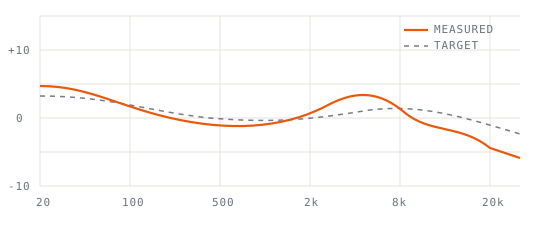

Part 01
/
Frequency response
Understanding frequency response
The single most useful — and most misread — measurement in headphone design.
A frequency-response curve answers one question: for a steady tone at each pitch, how loud is the headphone? Plot loudness in decibels against frequency on a log scale and you get the line every reviewer reaches for — and most read wrong.
Reading the plot
The orange trace is what the headphone actually does; the dashed charcoal line is the target you tuned toward. The gap between them is the whole job.

Three regions matter most. Below 100 Hz is the bass shelf the pad seal controls. The 1–4 kHz presence region is where the ear is most sensitive. Above 8 kHz, individual ear canals make measurements diverge — treat that range as a suggestion.